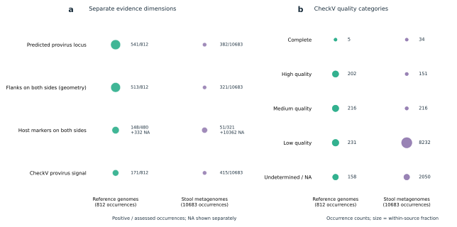
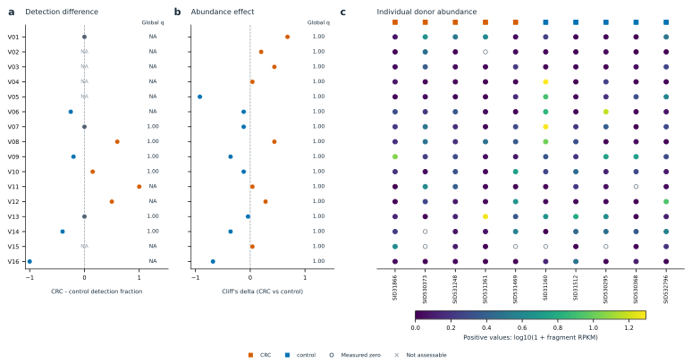

CRC-PHIRE：完整十人先导结果报告
本次纳入258份参考genome与10名供者（5例CRC、5名研究对照）。统一目录保留11495条来源实例，其中923条为caller预测的provirus位点。473个vOTU进入统计结果表；其中产生815项可计算检验。
这是单队列、小样本、探索性先导。预测位点、完整性、患者reads检出与可诱导性是不同证据；现有计算不能证明真实完整可诱导的噬菌体。功能注释连接不是患者中的功能表达或功能差异检验。原五图描述模块与新增差异模块共同构成本次报告。
计算已完成；真实Figure仍需最终视觉检查。全部比较见结果表，不能只根据图中展示对象判定有没有差异。
研究输入与逐人发现概览

圆点是每人组装得到的原始病毒实例数，竖线是其中预测provirus位点数。两者不是两个独立集合；原始病毒实例不能全部称为prophage。数量受测序深度和组装能力影响，不能直接解释为疾病差异。
All fixed donors; zeros retained.
PDF · SVG两端的序列交集与参考菌株连接

左图包含通过既定初筛的直接G–M序列对，可能有重叠点；不是所有未匹配对的分布。右图按参考分类单元和患者病毒序列展示连接，每格按不同参考genome去重计数，不将展开的多对多对应行当独立证据。这里的菌名表示参考端来源，不能证明患者体内宿主。
Up to16 broad-matched M sequences, sorted by pooled distinct-donor count, then length, then ID. No ranking by CRC effect.
PDF · SVG逐人的病毒谱与检出情况

热图展示按全体供者合并检出人数、合并平均丰度及编号排序的前24个vOTU，未按CRC差异挑选。灰色是未评估，低丰度与零值使用同一连续色阶。右图每个点是一名供者，短横线是中位数；展示全部目录中的检出数量。检出计数受测序和宿主背景影响，图中没有显著性检验或因果含义。
Up to24 pooled-detection-ranked vOTUs; all donors retained. Full unfiltered tables preserved.
PDF · SVGSequence-specific functional evidence

每行是一条宏基因组来源病毒序列；圆点面积随该序列上不同功能标签数增加，数字给出实际数值。PHROG仅计accepted=true且is_best=true的同源家族；防御和反防御计不同系统亚型，KO计不同KO编号，四列的统计单位并不相同。“—”表示没有报告该类命中，“?”表示未评估或来源表缺失；均不能解释为生物学缺失。这些是序列自身的计算证据，KO不是已确认AMG，系统命中不是机制验证。不从相似参考序列转移注释，不进行组间功能显著性检验。
At most 16 broad-matched M sequences selected by pooled donor count, then length and ID; no CRC contrast ranking.
PDF · SVGIllustrative sequence-level gene context

展示最多两条广泛匹配宏基因组病毒序列的自身基因坐标和方向；在先前按全体供者出现次数筛选的序列中按长度、编号排序选取，不按CRC与对照差异挑选。每个箭头是该序列实际预测的一个基因。颜色仅表示该基因自身的同源命中或系统成员证据，每条轨道最多标注六个基因；未着色不等于没有功能。同一基因可能有多类证据，所有类别保存在对应source-data表；颜色优先级为反防御、防御、KO、PHROG，仅用于显示。仅从系统表提供的实际gene ID连接系统成员。这些是未经过人工机制审查的展示实例，不是已确认实验候选；图中没有同源基因连线、序列共线性或宿主侧翼，不据此认定AMG、prophage整合或患者体内宿主。
Among the pooled-occurrence display set, choose up to two sequences by descending length, then ID; require every coordinate to be valid.
PDF · SVG按来源查看 prophage 证据与序列质量

左图的每一行是独立证据维度，数字为阳性数／可评估数，另列 NA；不是从低到高的真伪等级，也不能将行数相加。两侧几何侧翼只表示序列空间，不能自动称为细菌侧翼。CheckV 未报告 provirus 不等于否定 geNomad 的预测。右图按原始出现实例统计质量类别；无法确定质量单独保留，不视为零质量。参考端与宏基因组端各有自己的分母，同一病毒可在多个来源出现，实例数不等于独立 vOTU 数。
All accepted occurrence rows, grouped by source; evidence dimensions and quality shown separately.
PDF · SVG检出与丰度的探索性组间比较

最多展示 16 个 vOTU，按全部供者合并的检出比例降序、再按 vOTU 编号排序，未按 P 值、q 值或 CRC 效应选择。左侧为 CRC 减对照的检出比例差，中间为丰度的 Cliff’s delta；没有置信区间输入，因此不画误差线。两列 q 值均来自全部 vOTU 的检出与丰度两个端点合并后的全局 BH 校正，不采用逐端点 q 值。右侧每列一名供者，空心圆是有效测得的零，灰叉是不可评估，彩点是正丰度。分母和缺失原因见源表。本批发现与测量使用同一批样本，小样本差异只能用于提出假说；这不是独立验证、宿主校正效应或患者功能基因表达。
Pooled detection prevalence descending, then vOTU ID; at most 16, never ranked by P/q/effect.
PDF · SVG候选复核说明
预先按参考交集、序列质量和合并检出情况选择最多20条宏基因组provirus实例，本次复核20条。选择不依据P值。原组装reads跨越预测边界仅支持局部组装连续性；边界附近重复仅作序列复核线索，不能认定att位点、切出或诱导。
参数、代码SHA、输入输出校验及实际作业编号保存在各层manifest。原始及新增报告分别保留；本页为统一入口。